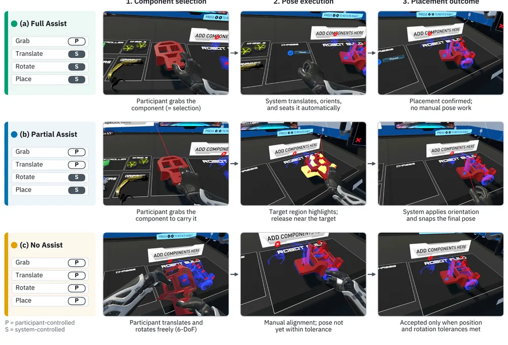

Purdue University · Doctoral research
VR assembly assistance and physical transfer
What can people do independently after practicing with different levels of help?
In GeoBotsVR, learners assemble, debug, and operate a two-wheeled robot. I built three versions of the assembly interaction that varied how much of the placement task the learner performed.
In a counterbalanced within-participant study, 54 people contributed data and 48 completed all three blocks. I combined interaction telemetry, immediate learning assessments, questionnaires, and performance on a matched physical assembly task.
Full Assist led to the fastest assembly in VR. Among completed physical-transfer trials, Partial Assist led to faster assembly than either other condition and received the highest engagement ratings. No Assist produced the highest workload. The mapped immediate assembly assessment favored Full Assist over No Assist.

- Full Assist
- The system placed the component automatically.
- Partial Assist
- The learner moved the component. The system oriented it and snapped it into place.
- No Assist
- The learner manually positioned and oriented the component.